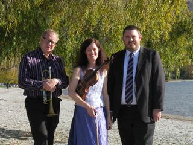
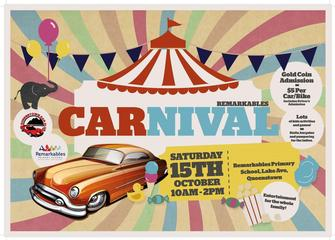
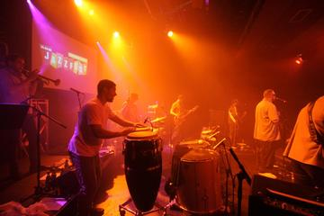
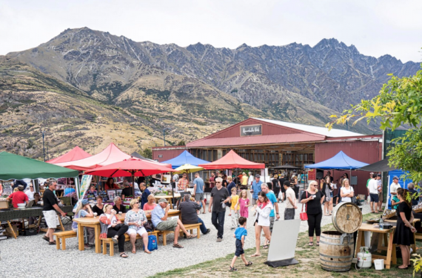

Queenstown’s stunning scenery, huge range of activities and renowned warm
welcome cement its reputation as New Zealand’s favourite visitor destination.
Surrounded by majestic mountains and set on the shores of crystal clear Lake
Wakatipu, the natural beauty and the unique
energy of the region create the
perfect backdrop for a holiday full of adventure, exploration or relaxation.
Have a look at some exciting events going on in Queenstown!
Markets Queenstown
"The Night Noodle Markets are an event
celebrating the mouth-watering tastes of Asian food from around the continent. Think
hawker style markets and fusion dishes, wrapped up with music and entertainment in a
picture perfect setting.
So far in 2016 we've conquered Christchurch
(February) and Wellington (June) and now we're hitting NZ's number one tourist destination...
Queenstown! Noodles, dumplings, and all sorts of delicious flavours + entertainment and SNOW.
What more could you want? We'll see you there September 28 - October 2."

The glorious sound of the trumpet,
strings and piano will blend together again, as the popular Tottle Trio consisting of
Cathy Irons (violin), Bruce Roberts (trumpet) and Grant Bartley (piano) return to
perform in Queenstown.
This outstanding group is excited to perform a new work by Malcolm Dedman,
especially written for them alongside an array of music; from Bernstein's West Side
story, the glittery Vivaldi's Double Concerto for Trumpet and Violin (arr.), to the
breathless Vaughan Williams' Lark Ascending. Bruce will display his versatility by
playing the Corno di Cacia (hunting horn) in the brilliant Sperger Concerto.

Come join in the fun of the fair,
and admire some of Queenstown finest cars, bikes and any other 'motors'!
While the car display will be held on the reserve next to the school grounds, the
school would host a day of activities including food stalls, a plant sale of herbs
prepared by school pupils, a book stall, dozens of children’s activities including a
Spider Web obstacle, golf putting, dunking machine, speed competition, and lots of fun
stalls that will thrill and chill some! Ladies will not be disappointed either with pampering
from Eforea Spa, lots of pre-Xmas shopping from a great selection of silent auction items,
chocolate wheel and stalls.

The 39th edition of the Queenstown
Jazzfest promises to deliver an exciting four days of live musical entertainment.
The festival has grown from humble beginnings back in 1978 to become one of
Queenstown's most popular music events, featuring world class musicians from
throughout the country and around the globe.

Local artisans sell crafts and gifts with a tasty selection of local produce available. Come and relax, enjoy the mellow vibes and outstanding 360° mountain views over a coffee and brunch. Located at The Remarkables Park Red Barn, the Market is open every Saturday from 9am to 2pm from 22 October 2016 to 15 April 2017.
Website Design © Copyright 2016 Aquila Halpé. Click here to contact the administrator.